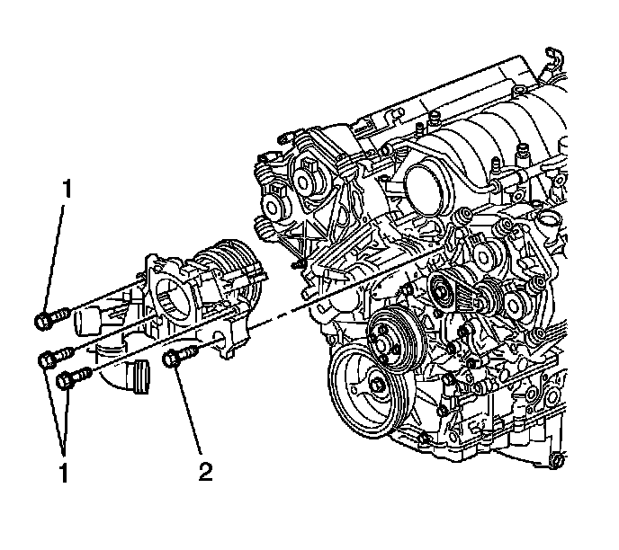

Water Outlet Housing Replacement
Water Outlet Housing Replacement (LH2 - Gas, 8 Cylinder, 4.6L, SFI, V8, DOHC, HO)
Removal Procedure

1. Drain the cooling system. Refer to Cooling System Draining and Filling (GE 47716 -Vac N Fill Coolant Refill Tool) (Service and Repair)Cooling System Draining and Filling (Static Fill) (Service and Repair) .
2. Remove the throttle body. Refer to Throttle Body Assembly Replacement (Removal and Replacement) .

3. Remove the manifold absolute pressure (MAP) sensor (3). Refer to Manifold Absolute Pressure Sensor Replacement (Service and Repair) .
4. Disconnect the evaporative emission (EVAP) canister purge solenoid valve hose and electrical connector. Refer to Evaporative Emission Canister Purge Solenoid Valve Replacement (Service and Repair) .

5. Compress the clamps and remove the following hoses from the thermostat and the water housing:
* The heater inlet hose (1)
* The radiator inlet hose (2)
* The heater outlet hose (3)
* The bypass hose (4)
* The surge tank inlet hose

6. Loosen the intake manifold duct clamp (1).

7. Remove the bolts (1, 2) securing the water outlet housing to the cylinder heads.
8. Remove the water outlet housing from the vehicle.
9. Discard the water outlet housing gaskets.
10. Clean and inspect the water outlet housing. Refer to Water Outlet Housing Cleaning and Inspection (Overhaul) .
11. Remove the following components from the water outlet housing if replacement is necessary:
* The intake manifold inlet duct and clamp
* The surge tank inlet hose fitting
* The heater inlet hose fitting
* The evaporative emission (EVAP) canister purge solenoid valve-Refer to Evaporative Emission Canister Purge Solenoid Valve Replacement (Service and Repair) .
Installation Procedure
Notice: Refer to Fastener Notice (Fastener Notice) .
1. Install the following components to the water outlet housing if previously removed:
* The intake manifold inlet duct and clamp
Tighten the manifold inlet duct clamp to 6 N.m (53 lb in).
* The surge tank inlet hose fitting
Tighten the surge tank inlet hose fitting to 18 N.m (13 lb ft).
* The heater inlet hose fitting
Tighten the heater inlet hose fitting to 20 N.m (15 lb ft).
* The (EVAP) canister purge solenoid valve
Tighten the purge solenoid valve bolt to 12 N.m (106 lb in).
2. Install NEW water outlet housing gaskets.
Important: The water outlet housing uses two different size bolts. Bolt (2) is approximately 10 mm longer than the other 3 bolts (1).
3. Install the water outlet housing to the vehicle.
4. Install the water outlet housing bolts.
Tighten the water outlet housing bolts to 25 N.m (18 lb ft).
5. Install the intake manifold duct clamp (1).
Tighten the intake manifold inlet duct clamp to 6 N.m (53 lb in).
6. Compress the clamps and install the following hoses to the thermostat and the water housing:
* The heater inlet hose (1)
* The radiator inlet hose (2)
* The heater outlet hose (3)
* The bypass hose (4)
* The surge tank inlet hose
7. Connect the evaporative emission (EVAP) canister purge solenoid valve hose and electrical connector. Refer to Evaporative Emission Canister Purge Solenoid Valve Replacement (Service and Repair) .
8. Install the manifold absolute pressure (MAP) sensor (3). Refer to Manifold Absolute Pressure Sensor Replacement (Service and Repair) .
9. Install the throttle body. Refer to Throttle Body Assembly Replacement (Removal and Replacement) .
10. Fill the cooling system. Refer to Cooling System Draining and Filling (GE 47716 -Vac N Fill Coolant Refill Tool) (Service and Repair)Cooling System Draining and Filling (Static Fill) (Service and Repair) .